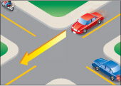
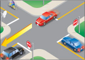
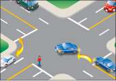
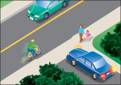

Be alert as you come to intersections and look carefully for pedestrians, cyclists, other motor vehicles, yield signs, stop signs and traffic lights. Be sure to scan any sidewalks and paths/trails as well as the roadways. Bear in mind that children are often unaware of traffic laws and also that cycling on the sidewalk may be permitted by local bylaw.

Diagram 2-18
There are two main types of intersections: controlled and uncontrolled.
Controlled intersections

Diagram 2-19
Controlled intersections have traffic lights, yield signs or stop signs to control traffic (Diagram 2-19).
At a controlled intersection where you face a green light, drive carefully through the intersection at a steady speed. If the light has been green for a while, be prepared to stop when it turns yellow. However, if you are already so close that you cannot stop safely, drive through the intersection with caution. Where you face a red light, come to a complete stop and wait until the light turns green.
When you approach an intersection on a main road, and the intersection is blocked with traffic, stop before entering the intersection and wait until the traffic ahead moves on. This does not apply if you are turning left or right.
At a controlled intersection where you face a yield sign, slow down or stop if necessary and wait until the way is clear before driving through the intersection.
At a controlled intersection where you face a stop sign, come to a complete stop. Drive through the intersection only when the way is clear (Diagram 2-19).
Uncontrolled intersections
Uncontrolled intersections have no signs or traffic lights. They are usually found in areas where there is not much traffic. Be extra careful around these intersections. If two vehicles come to an uncontrolled intersection from different roads at the same time, the driver on the left must let the driver on the right go first. This is called yielding the right-of-way.
Yielding the right-of-way
There are times when you must yield the right-of-way. This means you must let another driver go first. Here are some rules about when you must yield the right-of-way.
Diagram 2-18
At an intersection without signs or lights, you must yield the right-of-way to a vehicle approaching the intersection before you, and if you arrive at the same time, the vehicle approaching from the right has the right-of-way (Diagram 2-18).
Diagram 2-19
At an intersection with stop signs at all corners, you must yield the right-of-way to the first vehicle to come to a complete stop. If two vehicles stop at the same time, the vehicle on the left must yield to the vehicle on the right (Diagram 2-19).

Diagram 2-20
At any intersection where you want to turn left or right, you must yield the right-of-way. If you are turning left, you must wait for approaching traffic to pass or turn and for pedestrians in or approaching your path to cross. If you are turning right, you must wait for pedestrians to cross if they are in or approaching your path (Diagram 2-20). You should also check your blind spot for cyclists approaching from behind, particularly in a bike lane to your right, on a sidewalk or a trail. A yield sign means you must slow down or stop if necessary and yield the right-of-way to traffic in the intersection or on the intersecting road.

Diagram 2-21
When entering a road from a private road or driveway, you must yield to vehicles on the road and pedestrians on the sidewalk (Diagram 2-21).

Diagram 2-22
You must yield the right-of-way and wait for pedestrians to completely cross the road at pedestrian crossovers (Diagram 2-22) and school crossings with crossing guards.
Remember, signalling does not give you the right-of-way. You must make sure the way is clear.
Summary
By the end of this section you should know:
- The difference between controlled and uncontrolled intersections and how to safely navigate them
- The concept of right-of-way and common situations where you must yield to other road users